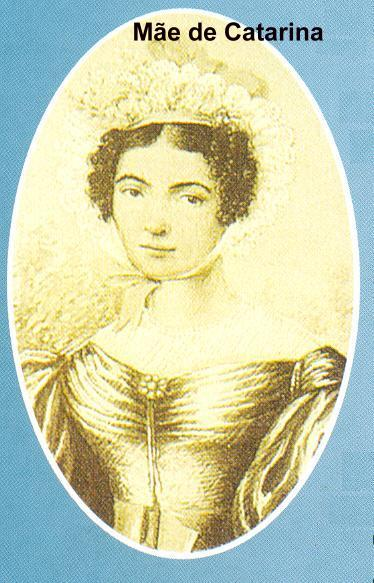
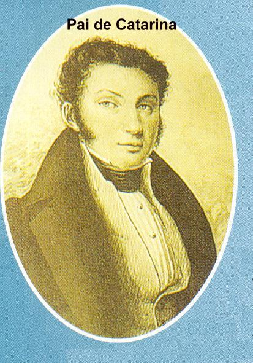
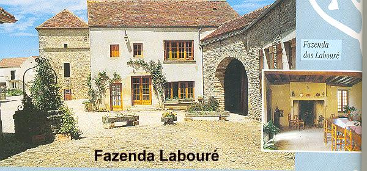
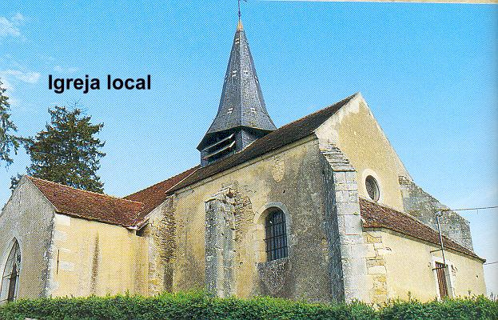
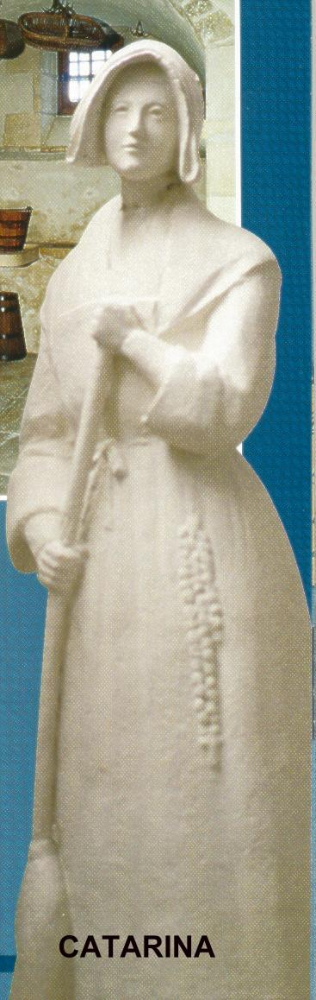

CATARINA (Catherine) LABOURÉ nasceu na
França no dia 2 de Maio de 1806, em Fain-lès-Moutiers, perto de 
No dia em que morreu sua mãe, com o coração transpassado pela dor, segurou um quadro com a imagem de NOSSA SENHORA que estava pendurado na parede da sala e com convicção fez um pedido: “Querida VIRGEM MARIA, me ajude dando-me forças e disposição para o trabalho, para que eu possa substituir dignamente minha falecida mãe em todos os afazeres.” Depois, enxugou as lágrimas e voltou para junto do leito mortuário onde estava à senhora Madalena, e embora tivesse tão pouca idade, estava com a fé revigorada, certa de que não estará sozinha ao longo de sua existência, para enfrentar os acontecimentos de cada dia.
Mas pelas dificuldades que logo surgiram, seu pai decidiu aceitar a oferta de uma irmã que morava distante 9 km, e lhe entregou duas filhas, Catarina com 9 anos e Tonine com 7 anos, para ela lhe ajudar na criação das meninas. A filha mais velha, Maria Luisa, assumiu os trabalhos habituais da fazenda.
Todavia, passados dois anos a saudade aumentou muito e então, o senhor Pedro trouxe-as novamente para o lar paterno.
Maria Luisa reconhecendo as qualidades e o interesse de sua irmã Catarina, a iniciou nos trabalhos do estábulo, do jardim, da casa e à preparação das refeições. A menina ficou radiante de felicidade e executava todos os serviços com dedicação e competência.
Por essa razão, quando sua irmã Maria Luisa comunicou ao pai o projeto, amadurecido a longos anos, de se fazer “Filha da Caridade”, entrando na Irmandade fundada por São Vicente de Paulo, Catarina olhando para sua irmã Tonine lhe disse: “Nós duas podemos muito bem dirigir a casa”. E assim aconteceu.

Recebeu a primeira Eucaristia no dia 25 de Janeiro de 1818, depois de uma cuidadosa preparação na catequese paroquial. Desde então, ia sempre a Santa Missa matutina em Moutiers-Saint-Jean, percorrendo os 4 quilômetros que separam as duas aldeias. As sextas feiras e sábados ela diminuía consideravelmente a sua alimentação, exercitando o sacrifício do jejum. Sua irmã Tonine se preocupava com as muitas atividades dela: não estaria Catarina empreendendo coisas acima de suas forças? Seria razoável jejuar assim na sua idade"
E por esses motivos as duas irmãs às vezes discutiam e Tonine também lhe fazia ameaças de contar tudo para o papai... Catarina a deixava falar a vontade, mas na realidade, continuava procedendo do mesmo modo, porque sua indômita força de vontade a conduzia a prosseguir fazendo o que compreendeu ser importante para a sua vida.
Uma noite Catarina teve um sonho: “Na Igreja de sua aldeia um velho Sacerdote celebrava a Santa Missa. Em dado momento o olhar dele cruzou com o dela. O olhar dele causou-lhe uma profunda impressão deixando-a recolhida com muita timidez. O Padre observando lhe disse: Minha filha hoje foge de mim, mas virá um dia em que irás me procurar... DEUS tem desígnios sobre vós, não vos esqueçais”.
Alguns anos mais tarde, visitando as Filhas da Caridade de Châtillon-sur-Seine, ela ficou admirada diante de um quadro pendurado na parede do parlatório: como no seu sonho, aqueles mesmos olhos a fascinaram! “Quem é este Padre”? Perguntou. “É São Vicente de Paulo”, respondeu-lhe a irmã que a recebeu.
São Vicente de Paulo nasceu em Paris, França, no dia 27 de Setembro de 1660. Ordenou-se sacerdote e por suas virtudes piedosas, foi escolhido pelo Rei da França Henrique IV a ser Capelão da Rainha Margot. Em nome dela, fazia a distribuição de esmolas aos pobres e visitava os enfermos no hospital de caridade. E realizava este projeto com uma imensa alegria e indescritível dedicação. Inspirado pelo seu amor aos pobres ele foi o criador de muitas obras de amor e caridade. Sua vida é uma história de doação aos irmãos pobres e sofredores e de incomensurável amor a DEUS. Fundou primeiro a "Confraria do Rosário" e depois, fundou a "Congregação da Missão", que são os Padres Lazaristas, inicialmente dedicados a evangelização do povo pobre do interior e na sequência, os padres se dedicaram aos pobres e sofredores em geral. Também fundou as "Irmãs de Caridade", depois conhecidas como "Filhas da Caridade" . São Vicente e seu trabalho foi tão divulgado e tão bem acolhido que, a obra "Conferências Vicentinas", fundada por Antonio Frederico Ozanam e seus companheiros, foi integralmente inspirada na obra dele. Vicente de Paulo faleceu no dia 27 de Setembro de 1660 e foi sepultado na Capela Mãe da Igreja de São Lázaro, em Paris. Foi canonizado pelo Papa Clemente XII em 1737.

Todavia, ela não se acostumou naquele pensionato de mocinhas. Sua ignorância e costumes de fazendeira valiam-lhe sempre muita zombaria. Sentindo-se com o orgulho ofendido, revoltou-se e retornou a Fain-lès-Moutiers. Aprendeu apenas a assinar o nome e a escrever algumas palavras.

O senhor Labouré compreende que não
conseguirá fazer com que ela desista de seu ideal, porque também ela, tem 
Sua habilidade de cozinheira e dona de casa logo atraiu inúmeros olhares... Contudo, ela permaneceu insensível e indiferente aos rapazes que queriam conquistá-la. Carlos cheio de pesar acompanhava a distância o sofrimento da sobrinha, percebendo que aquela não era a sua vocação. Assim, quando em 3 de Fevereiro de 1829 ele se casou novamente, aceitou de coração sincero que ela seguisse o seu ideal, viajando em busca de concretizar os seus projetos.
Mas Catarina não podendo ou não querendo voltar a casa de seu pai por motivo do irredutível posicionamento dele, escreveu para sua irmã Maria Luisa que era “Filha da Caridade”. Ela lhe aconselhou procurar o irmão mais velho Hubert, que morava em Châtillon, o qual estava casado há pouco tempo com uma prima. Ela era responsável por um pensionato feminino. Em sua carta, Maria Luisa escreveu: “Gostaria que lá ficasses por algum tempo, conforme lhe propôs a nossa cunhada, a fim de estudar apurando a sua educação, o que é muito necessário em qualquer ocasião da vida. Aprenderás um francês um pouco melhor do que aquele falado em nossa aldeia, aperfeiçoando a sua escrita, adestrando o modo de calcular e, sobretudo, dilatando a piedade, o fervor espiritual e o amor aos pobres”.
Ela viajou e ficou residindo na casa de seu irmão Hubert. Mas não conseguia fazer amizades com as moças da cidade, porque os comportamentos eram muito diferentes. Todavia, era cada vez maior a sua frequência a Casa das Filhas da Caridade de Châtillon. Catarina sentia que aquele era o seu ambiente e o seu ideal de vida. Por essa razão, o seu irmão se transformou em seu advogado diante do pai, o qual permanecia inflexível. Até que finalmente em 22 de Janeiro de 1830, com um pouco mais de estudo e uma educação mais apurada, Catarina começou o seu apostolado na Comunidade de Châtillon. Conforme a regra, ela teria que se submeter a três meses de experiência aos quais davam o nome de “discernimento” de uma parte e da outra, ou seja, dela e da Comunidade. Neste período seria naturalmente revelada a tendência e a disposição de sua vocação.